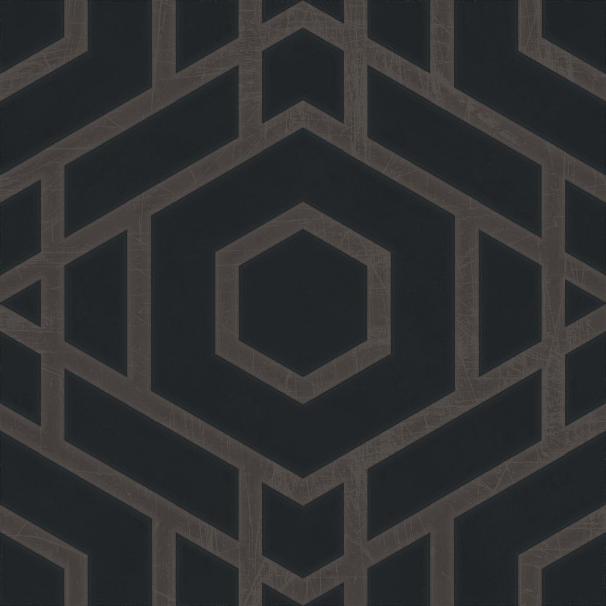
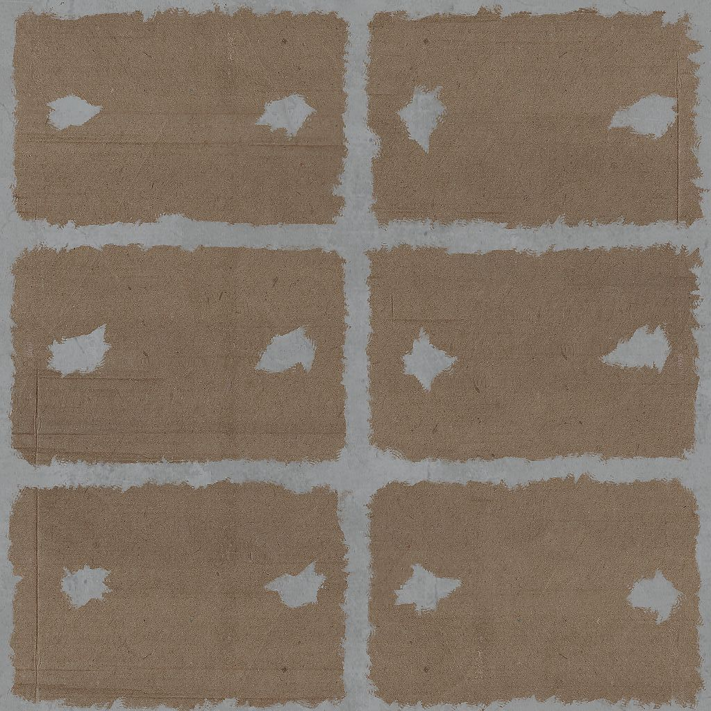

Out: Friday March 16, 2018
Due: Friday March 30, 2018 at 11:59pm
Work in groups of up to 4.
In this programming assignment, you will implement a simple maze crawler. The user will traverse through a virtual maze that is built dynamically from textual input. The maze will be displayed from a first-person perspective. When the user presses the arrow keys, this triggers an animation which moves the user to discrete positions within the maze.
First, download the framework code. We recommend creating a git repository for development, but please don't share your code publicly.
Inside the directory, open index.html, and you should see a web page with a black canvas
and some controls.
Please modify index.html so that it implements a maze crawler with behavior that is similar
to the one in the video. You may also add other code to the directory. However, do not use any 3D rendering
frameworks such as three.js. Linear algebra libraries such as
glMatrix and convenience libraries such as
jQuery and PreloadJS
are fine. In fact, we have included these in the distributed framework code.
Once you're done writing your solution, ZIP the directory, and submit the ZIP file to CMS.
A maze is a rectangular grid divided into equally sized cells. A cell is a square in the $xy$-plane whose size is $1 \times 1$ (in some unit of distance). There are two types of cells: walkable and unwalkable. If a walkable cell is adjacent to an unwalkable cell, there must be a vertical wall on their common cell edge. A vertical wall is also a square with a size of $1 \times 1$. One of its dimension is the $z$-axis, which is our vertical axis.
A maze is specified by its text representation that is entered into the "Maze" text area in
index.html. The text representation may contain the following types of characters:
\n.#, representing an unwalkable cell.., representing a walkable cell.N, E, W, or S,
representing a walkable cell in which the camera starts. These four characters represent
the initial "heading" of the camera. The heading is the 2D direction in the $xy$-plane of the
view direction. It is specified as the angle the view vector makes with the
positive $x$-axis.
N is the "north" direction $(0,1,0)$ and the heading is $\pi/2$.E is the "east" direction $(1,0,0)$ and the heading is $0$.W is the "west" direction $(-1,0,0)$ and the heading is $\pi$.S is the "south" direction $(0,-1,0)$ and the heading is $3\pi/2$.A valid string representation must satisfy the following conditions:
#.
The template code has a function that checks the above conditions. If one of them is not satisfied, the code will throw an exception, and the program will stop. As a result, you don't have to worry about these cases when you program, but you should keep them in mind when editing the string representation to test your program.
The string representation shows what the maze looks like when viewed from above (i.e. from where the $z$-coordinate is high). If the string representation has $h$ rows and $w$ (non-whitespace) characters in each row, then there are $w \times h$ cells in the maze, and the maze should occupy the rectangle $[0,w] \times [0,h]$ in the $xy$-plane. The character at the bottom left corner of the string representation corresponds to the cell whose bottom left corner is at $(x,y) = (0,0)$. The character at the top right corresponds to the cell whose bottom left corner is $(x,y) = (w-1,h-1)$.
From now on, we will refer to the cell that occupies the rectangle $[a,a+1] \times [b,b+1]$ in the $xy$-plane as the $(a,b)$-cell.
When the camera is not moving to another cell (as a response to keyboard input), it should be located at the middle point of a walkable cell. In other words, the $xy$-position of the camera should be at $(a+0.5,b+0.5)$ where $(a,b)$ is a walkable cell.
When the camera is not turning, its heading should be equivalent to $0$, $\pi/2$, $\pi$, or $3\pi/2$ radians. In other words, when stationary, the camera should always be facing north, east, west, or south.
When the user presses the up arrow key, the camera should move to the cell in the direction of the current camera heading if it is walkable. If the cell in that direction is not walkable (i.e., the camera is facing a wall), the camera should not move.
The canvas should show a smooth transition to the new location. To implement this, you can define an animation duration (a quarter of a second or so) during which the camera position linearly interpolates between the old position and the new position. During this transition period, all keystrokes and user interaction can be ignored.
The program should exhibit similar behavior when the down arrow key is pressed. However, the camera should move backward instead of forward.
When the user presses the left arrow key, the camera should increase its heading by $\pi/2$ radians. The canvas should show a smooth transition, interpolating between the old heading and the new heading over some animation period. Once again, all input during this animation can be ignored.
The system should exhibit similar behavior when the right arrow key is pressed. However, the heading should decrease by $\pi/2$ radians instead of increasing by that amount.
The $z$-position of the camera's position should be specified by the value in the
"Eye height" spinner. A height of 0 would mean that the camera is touching the ground
plane, and a height if 1 would mean that the camera is aligned with the top of the walls.
Use the provided getEyeHeight() method to access this value. Call this function every frame.
When constructing the projection matrix, its field of view (in degrees) should be specified
by the value in the "Field of view" spinner. This is the field of view of the vertical ($y$)
opening of the frustum. Use the provided getFOV() method to access this value,
which is converted to radians automatically. Call this function every frame.
We have provided textures to use to indicate the floor and the wall in the data/
folder:
|  |  |
ppa03_student/data/floor.jpg
(Source)
|
ppa03_student/data/wall.jpg
(Source)
|
We obtained these textures from OpenGameArt. They are created by yughues and are listed as belonging to the public domain.
The sky color we used is RGB = $(0.3, 0.7, 1.0)$. You don't have to use the exact same color, but choose a color that clearly delineates the background.
The template code has a global variable called maze that is updated every time
the "Update Maze" button is clicked. The variable contains an object which the following fields:
sizeX = the number of cells in the $x$-direction.sizeY = the number of cells in the $y$-direction.startHeading = the initial heading of the camera in radians.startPosition = a two-element array containing the integer coordinates of the initial cell.data = a two-dimensional array containing integers which indicate
whether the cells are walkable or unwalkable.
data[x][y] = 0, then the $(x,y)$-cell is walkable.data[x][y] = 1, then the $(x,y)$-cell is unwalkable.You will need to create a perspective matrix to display the 3D geometry. See Lecture 6 Exhibit 7 for an example. It may help to know that the canvas width will always be 800 pixels and the canvas height will always be 600 pixels. You can assume that nothing in the scene will be closer to the camera that 0.1 units and nothing will be further away than 100 units.
In order to receive full credit, you must implement at least one other feature beyond what is specified above. The amount of points you will receive depends on the effort spent on extra features. Implementing many features, or implementing an especially impressive feature, may earn extra credit. Some ideas for extra features are listed below.